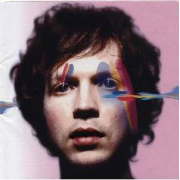

Top 100 Albums of 2000-2009 (Part Five: 60-41)
By No Ripcord Staff
 60. Arab Strap
60. Arab Strap
Continuing our run-down of the greatest albums of the last decade as voted for by No Ripcord writers, the following score of records encompass a wide of range of styles, from uncompromising hip-hop to lush surf-rock, from studious introspection to all-out technicolour pop. It’s this variation that makes the music we love so interesting and exciting, and it’s what keeps us coming back to these records, year after year.
60. Arab Strap“The Last Romance”
(Chemikal Underground – 2005)
No-one does tales of remorse, fallibility and the darker side of human desire quite like Aidan Moffat and on The Last Romance, Arab Strap’s parting shot, the music finally lived up to the words. Here, Arab Strap finally sounded like a band, rather than just an above-average concept, with the swirling, oppressive guitars of Stink proving the perfect mistress to Moffat’s attention-grabbing opening line (“Burn these sheets that we’ve just fucked in”). It wasn’t all destitute depravity though, and as the album progresses, there’s a sense of optimism and maturity, a feeling of coming through the other side (relatively) unscathed. Final track, There Is No Ending is about as close as Arab Strap come to a lion-hearted anthem, defiant against a never-ending tirade of tabloid and government scaremongering with chants and rousing horns. Arab Strap had left this world on their terms, and their victory was all of ours too. Joe Rivers
59. Beck
“Sea Change”
(Geffen – 2002)
Would Sea Change have made as much of an impact had it come from an artist with a lesser profile? It calls for a fair debate – up to that point, Beck had the world in his hands after releasing two genre-pushing albums that, oddly enough, stood high in both popularity and ingenuity. Existing somewhere between the luscious orchestral sonority of Nick Drake and the acoustic sparseness of Gordon Lightfoot, Sea Change told the story an artist who was still drowning in an ocean of heartbreak. Its impact may relate to how an artist that never had much cause for opening up was letting us in for the first time, utterly trounced and with bare elocution. It marked a point in Beck’s career where the fun had to end, and as much as he’s tried to inject some verve into latter recordings, he was never quite the same again. Juan Edgardo Rodriguez
58. The Avalanches
“Since I Left You”
(Modular – 2000)
The Avalanches may not have managed to secure sufficient votes for a place in our list of the Top 100 Debut Albums of all time, but Since I Left You sits comfortably within the list of the Top 100 Albums from 2000 to 2009. Running at just over an hour, it's one of the most sophisticated “cut-and-paste” records ever released. Manufactured out of samples from wildly different musical genres, the album could so easily have come across as confused and without focus, even desperate. However, Since I Left You is none of these things – it's a coherent and complete work of art, uplifting and full of energy throughout. Craig Stevens
57. Frightened Rabbit
“The Midnight Organ Fight”
(Fat Cat – 2008)
Once every couple of years a break-up album so raw, so emotionally draining, and so descriptive in the post-love carnage of a relationship, is released, in which only listening to it may reminisce one’s own traumatic heartbreak. For Scott Hutchison of Frightened Rabbit, the experience deserves more than a radio-friendly ballad; instead, he constructed an in-depth narrative of loneliness, despair, sex, escapism, jealousy, mortality, and, ultimately, sobering acceptance, and called it The Midnight Organ Fight. The title itself is a euphemistic testament to the sexual aggression driving the album’s songwriting, as well as the band’s music. It may be a barrage of complex emotions containing some of the most vulgar metaphors you’re ever likely to hear from a folk song, but it’s certainly not is your typical album surrounded by girl troubles. What does it have over the others? Honesty, Scottish accents, and an insurmountable amount of whiskey. Dave Hogg
56. Battles
“Mirrored”
(Warp – 2007)
Battles’ debut LP was (and still is) a good couple of hundred years ahead of its time. That’s largely thanks to Tyondai Braxton’s contribution, building on the complex math-rock rhythms established in their early EPs with a dizzying array of stretched, distorted and otherwise digitally-warped vocals. Their masterpiece is undoubtedly Atlas, an aural acid trip featuring what sounds like a bunch of drunken leprechauns and a surly, mechanical beat. Several other tracks deserve equal praise, especially the spluttering electro of Leyendecker and the hypnotic tribal loop that runs through Tonto. This is the kind of math it’s cool to be good at. Joel Stanier
55. Bob Dylan
“Modern Times”
(Columbia – 2006)
Among his masterworks, this is Dylan’s best since Time Out Of Mind. There’s nothing modern about the music, just old forms circling around Dylan’s jukebox mind reclaimed for the here and now. The formal structures of the blues, Brill Building ballads, and rockabilly are foundations for lyrics that give new spins to songcraft clichés, so the times are actually postmodern. Thematically, the album goes from light to dark. Lovelorn ballads and lustful ramblings pave the way for the lump-in-throat melancholia of Nettie Moore and the hard times of The Levee’s Gonna Break. The apocalyptic Ain’t Talkin’ reminds us that this Sixties icon still holds the trump cards. Angel Aguilar
54. Elliott Smith
“Figure 8”
(DreamWorks Records – 2000)
Inevitably, following his passing it's difficult to look at Figure 8 in the same way as on its release at the start of the decade. Then, the most striking things about the album, his second and final for (sort of) major label DreamWorks, were the big, glossy production and songwriting (which no doubt disappointed some fans of his earlier scrappier efforts), in which he indulged his Beatles-admiration to the point of decamping to Abbey Road to record several tracks. Now what really sticks out are the lyrics that read very much like the words of a man who had already given up on life. Still, there are rays of sunlight that punctuate the gloom and, even in its darkest moments, it manages to uplift with its exquisite arrangements. Mark Davison
53. The White Stripes
“De Stijl”
(Sympathy for the Record Industry – 2000)
The album is named after a Dutch artistic movement that favored simplicity over self-consciousness. The group had been loyal to this approach since their first album, but it comes to perfect fruition on this sophomore effort. It was also a life design for Jack and Meg White. Between his virtuoso guitar and her gleeful bashing, there was nothing missing. It’s a symbiosis that serves well this batch of songs, a party mix of killer riffs (Hello Operator), jaunty pop (Apple Blossom), and blues covers (Death Letter). Sadly, that fragile bond couldn’t last forever with all those media eyes upon them. We miss you, Meg. Angel Aguilar
52. Badly Drawn Boy
“The Hour Of Bewilderbeast”
(XL/Twisted Nerve – 2000)
There may never have been a more self-deprecating success than Damon Gough, but it’s reassuring to know that despite his self-loathing sentiments towards his songwriting ability, he was at least careless enough to allow the eighteen tracks of The Hour Of Bewilderbeast to slip through his sharpened critique. There is a kind of comforting familiarity to his music which embraces you within its melancholic rumble whilst still managing to excite and swell to glorious expansions. What really defines this record is the plethora of experimental elements within a cohesive frame that refuse to be defined or corralled to an individual form. It is both uncultured and artisan, allowing you to delve deeper without fatigue and explore his sound and mind with a consuming awe. Matt Bevington
51. Cannibal Ox
“The Cold Vein”
(Definitive Jux – 2001)
US hip-hop went through a golden patch in the late 1990s/early 2000s – it felt as though innovation and experimentation had taken precedence over braggadocio and gangstas. Acts such as Anti-Pop Consortium and Cannibal Ox, and labels like Definitive Jux and the Quannum collective offered a way out of the ghetto for many. The remainder of the decade however became dominated by a few egos of gigantic proportions (I need not name names) that blotted out the sun. Only in recent years has the situation begun to be redressed with emergence of groups like Death Grips, Odd Future and mercurial figures like Lil B. The Cold Vein is a particular high-point in this golden age. The production and the beats in particular, provided by El-P, are superb, offering original and sometimes cinematic-sounding samples to back the lyrics, which themselves are poetic in their use of rhymes and imagery. David Wood
50. The Go! Team
“Thunder, Lightning, Strike”
(Memphis Industries – 2004)
The Go! Team arrived seemingly out of nowhere in 2004 with a fully-formed aesthetic and a great line in kaleidoscopic riots. Music has rarely seemed as fun as it does on Thunder, Lightning, Strike – a cut-and-paste collage of hip-hop, breakbeats, rhymes, chants and samples from old soul records. There’s an innate playfulness about the record too, which can be heard in everything from the horn fanfare that heralds the arrival of Bottle Rocket to the reference to the 1980s children’s TV show, Junior Kick Start. While most of the record whizzes by in a race to the tuck shop, it’s not without emotional depth, as instrumental closer Everyone’s a VIP to Someone packs a real punch. Sometimes the debut record is all you need to present your manifesto to the world. That’s certainly the case with The Go! Team; it’s almost certain they’ll never better this. Joe Rivers
49. Of Montreal
“Hissing Fauna, Are You The Destroyer?”
(Polyvinyl – 2007)
I remember once thinking, before the release of Kevin Barnes’ magnum opus Hissing Fauna…, that Of Montreal were never going to be anyone’s favourite band. They’d made some undeniably catchy, but silly, music in the past, vignettes of sickly-sweet absurdism, somewhere between Edward Lear and Jean-Paul Sartre. Hissing Fauna… improved things on all counts, Barnes for once honing in on his personal troubles, the first half describing his depression and fear under the cover of the lush false optimism of Of Montreal’s bombastic electro-pop. But things are split open back into surrealism by the monolithic The Past is a Grotesque Animal, morphing into the perspective of Barnes’ hedonistic, transsexual alter-ego Georgie Fruit for the record’s funkadelic second half. It’s shockingly daring concept, but the album it created is an astounding piece of work. Stephen Wragg
48. Four Tet
“Rounds”
(Domino – 2003)
Four Tet’s Rounds is absolutely gorgeous. It’s full of skeletal open spaces and full, brilliant moments alike. Ideas that could be brief parts of other songs go on for several minutes, creating a lulling sensation and allowing the listener to focus on the beauty of it all. You can bob your head slowly and take it all in for as long as Kieran Hebden sees fit, and it’s all good enough to go on forever. Having small ideas so good that they can drip on forever is a special rarity, and Rounds is one of the few albums to pull it off well. It came out as the IDM era was drawing to a close, but ranks among the best albums of the genre. Andrew Baer
47. The White Stripes
“White Blood Cells”
(Sympathy for the Record Industry – 2001)
We were still a few years away from the decade-defining riff, but White Blood Cells gave us the long overdue song that could stand next to Big Star’s Thirteen as an equally sweet tale of childhood love. With similar playfulness permeating the record, The White Stripes became a tour de force, mastering everything from country-rock on Hotel Yorba to punk-infused adrenaline rushes of Fell In Love With A Girl without ever trying too hard—and when they were done with that there were still twelve more tracks! Three albums in, the red and white ditched the covers (though a Citizen Kane appropriation on The Union Forever comes close) and Jack White begun to serenade from the piano whenever he got bored of punching out monster guitar hooks, a balance achieved successfully enough to launch the band into a stardom that lingers on even as the band does not. Forrest Cardamenis
46. Radiohead
“Amnesiac”
(Parlophone – 2001)
When journalist Sook-Yin Lee interviewed Radiohead in 2001, she asked Thom Yorke about the meaning of the title for Amnesiac. Yorke, always somewhat lost for words in interviews, responded, “Most of the stuff on Amnesiac is about being trapped in one particular lock, like in your heart or in your head, that you just can't get out of.” Upon listening, you get an understanding of what he meant. Amnesiac is full of claustrophobic passages and panicked lyrics that resemble white blood cells fighting their ultimate, unfruitful battle against a malignant cancer. It's gloomy, but also gorgeous; the timbres they employ – the strings on Dollars & Cents, the backwards singing on Like Spinning Plates, the vocoder on Pull/Pulk Revolving Doors – all accumulate into 43 minutes of emotional struggle...with what? With who? That mystery makes Amnesiac all the more associative, revealing Yorke's songwriting at its most elusive, most dense, and most scrambled. Michael Iovino
45. The Libertines
“Up The Bracket”
(Rough Trade – 2002)
This is a shambolic delight. Each song teeters towards chaos, rescued in the nick of time by cheek and charm. Vertigo opens the album with piss and vinegar, the duo of Pete Doherty and Carl Barât sounding like they don’t care, until you realize there’s enough passion there to build a kingdom. With its tales of kings and queens, the album laid a foundation for a myth that couldn’t be explored further on account of drugs and egos. Songs like The Boy Looked At Johnny and Death On The Stairs are like fractured Merseybeat – another musical possibility left unexplored. The ship of Albion was launched and wrecked here. Angel Aguilar
44. The Streets
“A Grand Don't Come For Free”
(Locked On/679 – 2004)
This album shouldn’t be as good as it is. A Brummie faking a Cockney accent and a weird rapping style. Songs about betting on football, chatting up women and blaming yourself for a break-up. A load of wallowing plus it’s one long story. Yet it works. It’s the personal feel, everyone can think of a friend trying to fight and someone shouting, “it’s not worth it!” or the bubbling misanthropy that follows a messy split. Why else has Dry Your Eyes become the archetypal male break-up track? It’s real. Okay, maybe it’s too blokey. Maybe it’s too British. Or maybe it’s brilliant and if you don’t like it you’re wrong. James McKenna
43. The Futureheads
“The Futureheads”
(679/Sire – 2004)
Pioneering the only slightly marginalized genre of a cappella punk, The Futureheads’ 2004 self-titled debut was a striking, intense, and brief revival of faith in guitar rock. Their influence draws heavily from the best of late-70s punkers The Jam, Gang of Four, and The Clash, while injecting irresistibly catchy and complex harmonies that would make Brian Wilson blush. Witty lyrics play on the drabness of everyday social situations, from soulless jobs to senseless acquaintances, countering the assumption that this will simply be another politically-charged punk album. Instead, The Futureheads is the sound of post-adolescent restlessness and the resistance against settling. Dave Hogg
42. Franz Ferdinand
“Franz Ferdinand”
(Domino – 2004)
Though time has taken some of the sheen off, it is easy to forget how refreshing Alex Kapranos and his swarthy cohorts were on the scene. They remain the essential third element of the Triforce that banished nu-metal from the charts once and for all; but whereas The Strokes and The Libertines were a bit rough around the edges, Franz arrived fully-formed and impeccable, brimming with charm, wit and a deft knack for penning an absolute belter of a pop song. Their debut houses eleven of them to be precise, 37 minutes of joy from the moment the word, “Jacqueline”, rolls off Kapranos' tongue until the closing notes of 40'. A total triumph. Gabriel Szatan
41. Brian Wilson
“Smile”
(Nonesuch – 2004)
Yes, you’ve heard some of these songs on Beach Boys albums; as such, they were tantalizing pieces of a puzzle. Wilson solves it here. This work is a musical journey through time that begins at Plymouth Rock, the nation-building frontier moving westward until it reaches the shores of Hawaii. In between, we hear snippets of discarded musical styles, the flotsam and jetsam of memories. Songs like Wonderful and Wind Chimes gain a magical sheen never evident in their 1967 versions. Having reached closure, Wilson climbed new heights as a solo artist. So why is he rejoining the Beach Boys? The saga continues… Angel Aguilar
11 July, 2012 - 06:44 — No Ripcord Staff